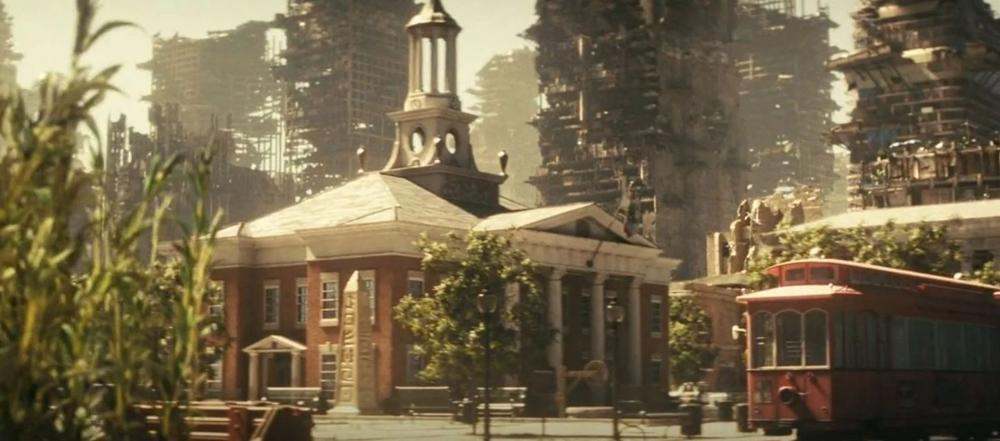

シェイディ・サンズ裁判所
TVシリーズ ロケーション
LOCATION DATA

The Shady Sands courthouse is a building in Shady Sands that briefly appears in flashbacks {{in|FOTV}}.
Background
The heart of the capital's judiciary, the courthouse was a Greek Revival two-story building located in the historic square of Shady Sands, near the pillar dating back to the earliest days of the settlement. It was characteristic of its red brick and oversized NCR flag permanently hanging above the front entrance. Near the courthouse was a Shady Sands tram system station, with a field of corn nearby (as agriculture continued to flourish in the town, even after it became a capital).Destroyed in the nuclear attack that vaporized the capital, a part of the courthouse survived: Its cupola fell to the bottom of the crater, remaining there ever since.
Appearances
The Shady Sands courthouse appears {{In|FOTV}} episodes "The Past", "The Trap", and "The Beginning".Gallery
References
{{References}}Category:Fallout TV series locations Category:Shady Sands
Impression
（準備中）
（準備中）